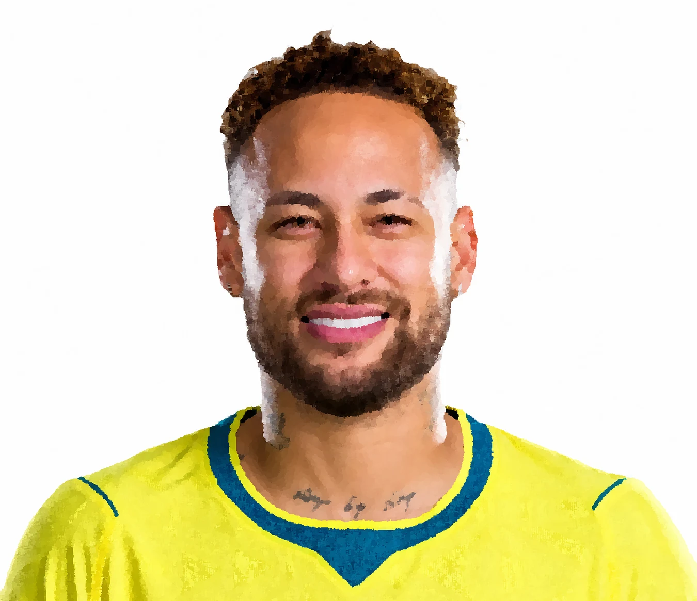

Cinco cidades, quatro clubes e uma camisa. Passe pelos nomes para ver a rota.
Números finais pela Seleção Brasileira (2010–2026).

retrato · pintura digitalMaior artilheiro da história da Seleção. Marcou em quatro Copas do Mundo, como Pelé.